section in PDF
manual in PDF
|
|
| ||
| Get this section in PDF |
Get entire manual in PDF |
Chapter 6: Managing Licenses
Introduction
The Ixia Registration Utility (IRU) provides a means for monitoring and managing the various installed licenses on a per chassis or workstation basis. Before starting the license management process, it is helpful to have the following information available:
- Registration Number and password for the license – this comes as an e-mail from Ixia to the Lab Manager and should have been forwarded to the person in charge of the installation. The password is necessary for operations performed on licenses from the License Management dialog.
- Workstation or Ixia Chassis – this is the name or IP address of the computer or chassis that requires the license. This should also be provided by the Lab Manager.
- License Server – if the lab will use a central License Server, the Lab manager should have provided its name or IP address.
License configuration options are also supported via a text file.
The following topics are covered in this chapter:
License Management
License management can be done after the IRU is installed and running, and is able reach the various computers, chassis, and/or License Servers in the test environment. Make sure the network connectivity requirements discussed in Installation Scenarios are understood, and that the necessary information discussed above in Introduction is available.
The following sections explain how to start and operate license management:
Opening the Ixia Registration Utility
License management is started by opening the IRU. When the IRU is opened, the screen shown in Figure 6-1 is displayed. This is the main IRU screen that allows the user to select various registration operations. To open the IRU, select Start > Programs > Ixia > Licensing > IRU from the Start menu.
Figure 6-1. Ixia Registration Utility Main Dialog
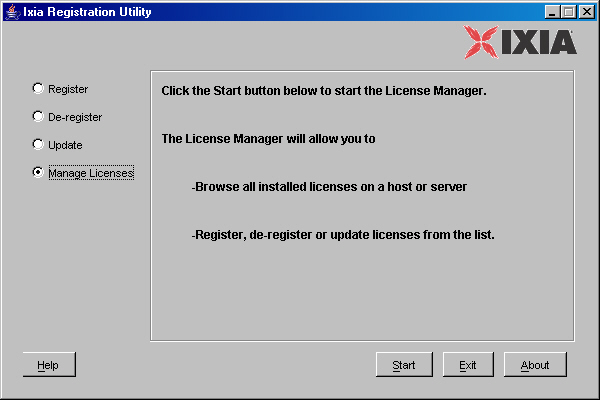
License Management Dialog
The main tool for managing local and remote licenses (such as those on a License Server) is the License Management dialog, shown in Figure 6-2.
Figure 6-2. Ixia Licence Management Utility Dialog
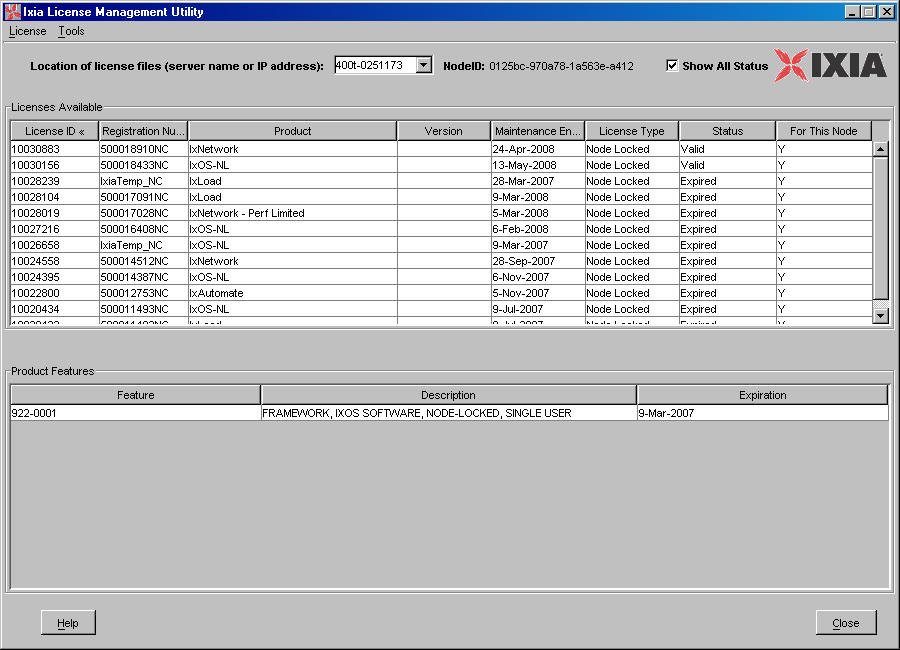
Table 6-1 describes the fields in the Ixia License Management dialog.
License Menu Options
The License menu in the Ixia License Management dialog allows for more streamlined licensing operations. Using the options in this menu allow the user to skip the step of entering the Registration Number and Password.
The options in the License menu are:
- De-register – Allows for de-registering the license. Selecting this option starts the de-registration process which is described in Chapter 3, De-registering Licenses.
- Update – Allows for updating a selected license. Selecting this option starts the update process, which is described in Chapter 4, Updating Licenses.
- Add License – Allows for adding a previously registered license to its workstation, chassis, or server. Selecting this option starts the add license process, which is described in Adding Licenses on page 6-7.
The de-register and update operations require the password provided with the registration number, as described in Introduction above. Once one of these operations is selected, the Password Input dialog is displayed, as shown in Figure 6-3.
Figure 6-3. Password Input Dialog
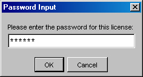
The process for adding a license is described in Adding Licenses on page 6-7 below.
Adding Licenses
One of the features in the LMU License menu is Add License. A license can be added to a workstation or chassis after it has been downloaded from the Ixia's Registration Server, but for some reason was not installed. Most times this occurs when during offline registration, the user closes the Ixia Registration Utility (IRU) before completing Step 8: Online – Save the License File.
- From the LMU License menu, select Add License, or press the Ctrl + A keys. The dialog shown in Figure 6-4 is displayed.
Figure 6-4. Add License – Step 1
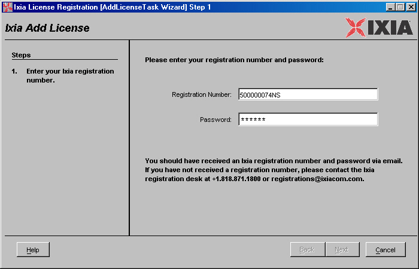
Enter the Registration Number and Password for the license being added, then select the Next button.
- The next dialog displayed is shown in Figure 6-5.
Figure 6-5. Add License – Step 2
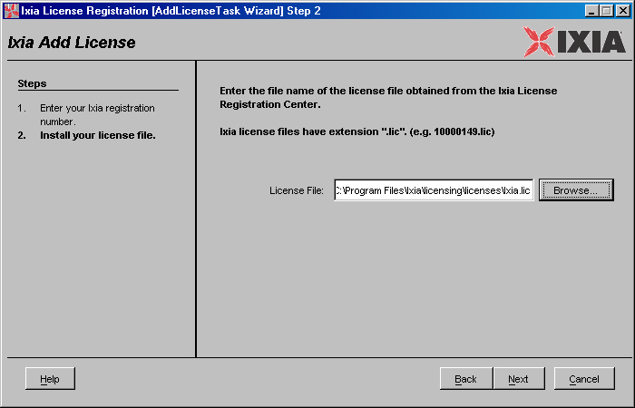
Enter the file license file name in the field provided, or use the Browse button to locate it. Once selected, the path to the license should display in the field. Press the Next button.
- The process should install the license the license to the correct chassis or workstation. When it is finished the dialog shown in Figure 6-6 is displayed.
Figure 6-6. Add License – Step 3
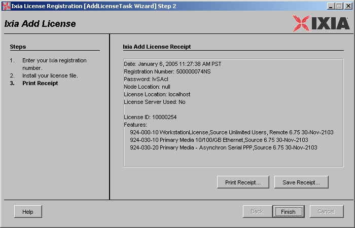
To save the receipt to disk, press the Save Receipt... button and designate a file. To make a printout of the receipt, press the Print Receipt... button and select a printer.
Press Finish to exit the Add License process.
Moving Licenses
Licenses can be moved between chassis, workstations, and License Servers. To move a license from one machine to another:
Tools Menu Options
The Tools menu options are listed below:
Setting
The Setting control allows the user to specify a proxy server registration and to force the IRU to use offline registration. To use the Setting control, select Tools> Setting in the menu bar, as shown in Figure 6-7 on page 6-10.
Figure 6-7. Open the Setting Dialog
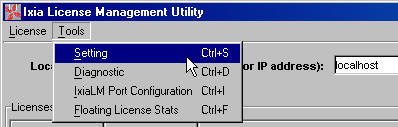
There are two tab options in the Setting dialog:
Proxy
The Proxy tab page controls the use of proxy server in license registration. If a proxy server is used in the network from which the registration is being performed, it is necessary to set the name and port of the proxy server.
The Proxy tab page is show in Figure 6-8 on page 6-11.
Figure 6-8. Proxy Tab
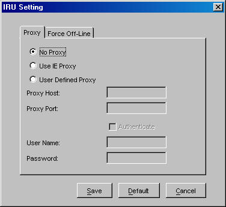
Table 6-2 on page 6-11 describes the functionality of the Proxy tab page.
Force Off-Line
The Force Off-Line tab page controls whether the IRU forces an off-line registration or not.
Figure 6-9 on page 6-12 shows the Force Off-Line tab page.
Figure 6-9. Forced Off-Line Tab
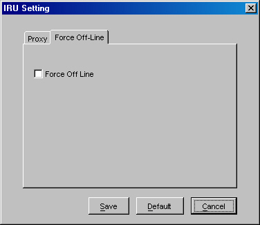
Select the Force Off Line checkbox to force the IRU to register licenses offline.
Using the Diagnostic Utility
The diagnostic utility helps the user to troubleshoot and understand licensing installation and registration problems. To open this utility, select Tools > Diagnostic in the menu bar, as shown in Figure 6-10 on page 6-13:
Figure 6-10. Open the Diagnostic Utility
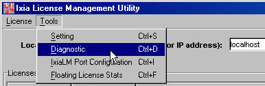
The diagnostic utility main window appears as in Figure 6-11 on page 6-13:
Figure 6-11. Diagnostic Utility
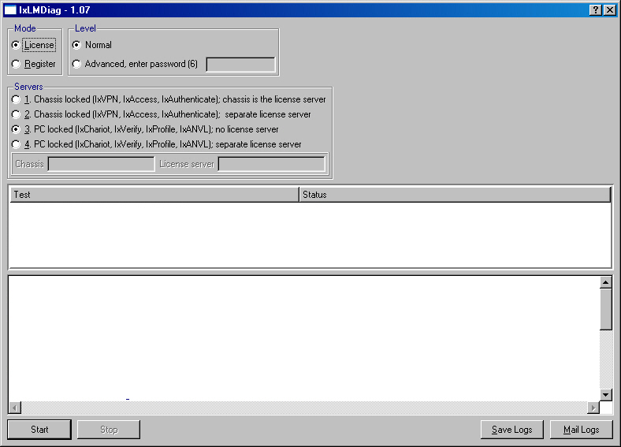
For specific information on using this utility, see Appendix C, Licensing Diagnostic Utility.
IxiaLM Port Configuration
If the license server and the licensed node are separated by a firewall, the license server may have problems validating the node for licensed use. In this situation it may be necessary to specify a TCP port that works with the firewall setup on the localhost for the license
To open this utility, select Tools > IxiaLM Port Configuration in the menu bar, as shown in Figure 6-12 on page 6-14:
Figure 6-12. Open IxiaLM Port Configuration
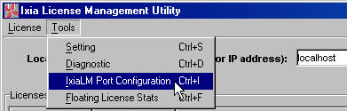
The IxiaLM Port Configuration dialog appears as in Figure 6-13 on page 6-14:
Figure 6-13. IxiaLM Port Configuration Dialog
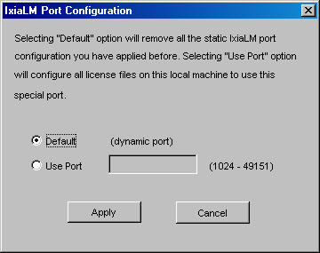
Table 6-3 explains the options in the IxiaLM Port Configuration dialog.
Floating License Traffic Statistics
The Floating License Traffic Statistics feature provides a way for users to examine floating license statistics such as the total license token count, available token count, users that have checked out license tokens, and the number of license tokens each user has checked out.
To open this utility, select Tools > Floating License Stats in the menu bar, as shown in Figure 6-14 on page 6-15:
Figure 6-14. Open Floating License Stats
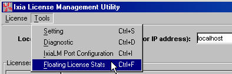
The Floating License Statistics dialog appears as in Figure 6-15 on page 6-16:
Figure 6-15. Floating License Statistics Dialog
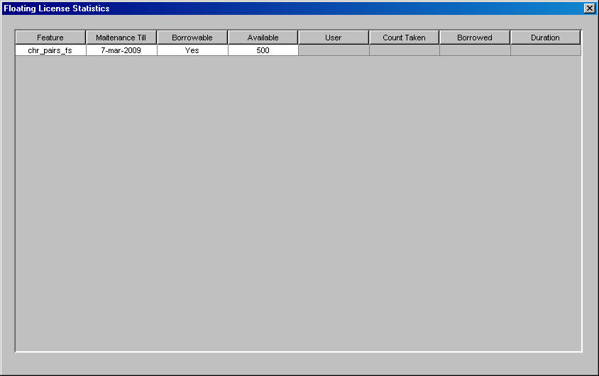
Table 6-4 explains the options in the Floating License Statistics dialog.
Floating License Configuration Options
Ixia's licensing system supports configurable options for floating licenses by installing an option file, called
ixialm.opt, with the software.A floating license server administrator can control license usage based on user, host, domain, or other criteria, introducing a option file on the floating license server with some predefined option syntax. The administrator can modify the sample options syntax to achieve better administrative control on the floating license server.
The following options are supported:.
Initially, all options are disabled.
Syntax
The following sections detail the file options syntax and how they are used. The syntax is used in the ixialm.opt file, and is modified with any text editor. In the following command syntax:
BORROW_LOWWATER
Sets the number of BORROW licenses that cannot be borrowed. This number sets the minimum number of free licenses. For example, if this variable is set to 10, and a server has twenty licenses, only 10 can be borrowed at any one time.
Example:
DEBUGLOG
Writes debug log information for this vendor daemon to the specified file. The addition of a plus sign (+) before the logfile name appends the log. If no plus sign is used, restarting the license server service overwrites the previous log.
Example:
EXCLUDE
Deny a user or users access to a feature, based on specified parameters. The exclusions parameter is one of the following:
- USER – reserves for a specific user. User names are case sensitive.
- HOST – reserves for a specific host machine. Host names are case sensitive.
- DISPLAY – includes the display machine. On UNIX, DISPLAY is /dev/ttyxx (which is always /dev/tty when an application is run in thebackground) or the X-Display name. On Windows, it is the system name or, in the case of a terminal server environment, the terminal server client name. Display names are case sensitive.
- INTERNET – reserves for a specific IP address or IP subnet. Wildcard characters can be used in the IP address.
- GROUP – reserves for a pre-defined group of users (see GROUP on page 6-20 for more information on defining a user group). Group names are case sensitive.
- HOST_GROUP – reserves for a pre-defined group of hosts (see HOST_GROUP on page 6-21 for more information on defining a host group). Host group names are case sensitive.
Examples:
EXCLUDE IXNETWORK_5.30 USER michael EXCLUDE IXNETWORK_5.30 HOST MICHAEL-PC1 EXCLUDE IXNETWORK_5.30 DISPLAY MICHAEL-PC1 EXCLUDE IXNETWORK_5.30 INTERNET 10.205.20.67 EXCLUDE IXNETWORK_5.30 INTERNET 10.205.20.* EXCLUDE IXNETWORK_5.30 GROUP WRITERS EXCLUDE IXNETWORK_5.30 HOST_GROUP WRITERS-PCSEXCLUDE_BORROW
Deny a user or users the ability to borrow BORROW licenses, based on specified parameters. The exclusions parameter is one of the following:
- USER – reserves for a specific user. User names are case sensitive.
- HOST – reserves for a specific host machine. Host names are case sensitive.
- DISPLAY – includes the display machine. On UNIX, DISPLAY is /dev/ttyxx (which is always /dev/tty when an application is run in thebackground) or the X-Display name. On Windows, it is the system name or, in the case of a terminal server environment, the terminal server client name. Display names are case sensitive.
- INTERNET – reserves for a specific IP address or IP subnet. Wildcard characters can be used in the IP address.
- GROUP – reserves for a pre-defined group of users (see GROUP on page 6-20 for more information on defining a user group). Group names are case sensitive.
- HOST_GROUP – reserves for a pre-defined group of hosts (see HOST_GROUP on page 6-21 for more information on defining a host group). Host group names are case sensitive.
Examples:
EXCLUDE_BORROW IXNETWORK_5.30 USER michael EXCLUDE_BORROW IXNETWORK_5.30 HOST MICHAEL-PC1 EXCLUDE_BORROW IXNETWORK_5.30 DISPLAY MICHAEL-PC1 EXCLUDE_BORROW IXNETWORK_5.30 INTERNET 10.205.20.67 EXCLUDE_BORROW IXNETWORK_5.30 INTERNET 10.205.20.* EXCLUDE_BORROW IXNETWORK_5.30 GROUP WRITERS EXCLUDE_BORROW IXNETWORK_5.30 HOST_GROUP WRITERS-PCSEXCLUDEALL
Deny a user or users to all features, based on specified parameters. The exclusions parameter is one of the following:
- USER – reserves for a specific user. User names are case sensitive.
- HOST – reserves for a specific host machine. Host names are case sensitive.
- DISPLAY – includes the display machine. On UNIX, DISPLAY is /dev/ttyxx (which is always /dev/tty when an application is run in thebackground) or the X-Display name. On Windows, it is the system name or, in the case of a terminal server environment, the terminal server client name. Display names are case sensitive.
- INTERNET – reserves for a specific IP address or IP subnet. Wildcard characters can be used in the IP address.
- GROUP – reserves for a pre-defined group of users (see GROUP on page 6-20 for more information on defining a user group). Group names are case sensitive.
- HOST_GROUP – reserves for a pre-defined group of hosts (see HOST_GROUP on page 6-21 for more information on defining a host group). Host group names are case sensitive.
Examples:
EXCLUDEALL IXNETWORK_5.30 USER michael EXCLUDEALL IXNETWORK_5.30 HOST MICHAEL-PC1 EXCLUDEALL IXNETWORK_5.30 DISPLAY MICHAEL-PC1 EXCLUDEALL IXNETWORK_5.30 INTERNET 10.205.20.67 EXCLUDEALL IXNETWORK_5.30 INTERNET 10.205.20.* EXCLUDEALL IXNETWORK_5.30 GROUP WRITERS EXCLUDEALL IXNETWORK_5.30 HOST_GROUP WRITERS-PCSGROUP
Defines a group of users for use with the options statements.
Example:
GROUPCASEINSENSITIVE
Turns off case sensitivity for user and host lists specified in GROUP and HOST_GROUP keywords. By default, the license server is case sensitive.
Example:
HOST_GROUP
Defines a group of hosts for use with the options statements.
Example:
INCLUDE
Allow a user or users access to a feature, based on specified parameters. The inclusion parameter is one of the following:
- USER – reserves for a specific user. User names are case sensitive.
- HOST – reserves for a specific host machine. Host names are case sensitive.
- DISPLAY – includes the display machine. On UNIX, DISPLAY is /dev/ttyxx (which is always /dev/tty when an application is run in thebackground) or the X-Display name. On Windows, it is the system name or, in the case of a terminal server environment, the terminal server client name. Display names are case sensitive.
- INTERNET – reserves for a specific IP address or IP subnet. Wildcard characters can be used in the IP address.
- GROUP – reserves for a pre-defined group of users (see GROUP on page 6-20 for more information on defining a user group). Group names are case sensitive.
- HOST_GROUP – reserves for a pre-defined group of hosts (see HOST_GROUP on page 6-21 for more information on defining a host group). Host group names are case sensitive.
Examples:
INCLUDE IXNETWORK_5.30 USER michael INCLUDE IXNETWORK_5.30 HOST MICHAEL-PC1 INCLUDE IXNETWORK_5.30 DISPLAY MICHAEL-PC1 INCLUDE IXNETWORK_5.30 INTERNET 10.205.20.67 INCLUDE IXNETWORK_5.30 INTERNET 10.205.20.* INCLUDE IXNETWORK_5.30 GROUP WRITERS INCLUDE IXNETWORK_5.30 HOST_GROUP WRITERS-PCSINCLUDE_BORROW
Allow a user or users access to borrow a feature, based on specified parameters. The inclusion parameter is one of the following:
- USER – reserves for a specific user. User names are case sensitive.
- HOST – reserves for a specific host machine. Host names are case sensitive.
- DISPLAY – includes the display machine. On UNIX, DISPLAY is /dev/ttyxx (which is always /dev/tty when an application is run in thebackground) or the X-Display name. On Windows, it is the system name or, in the case of a terminal server environment, the terminal server client name. Display names are case sensitive.
- INTERNET – reserves for a specific IP address or IP subnet. Wildcard characters can be used in the IP address.
- GROUP – reserves for a pre-defined group of users (see GROUP on page 6-20 for more information on defining a user group). Group names are case sensitive.
- HOST_GROUP – reserves for a pre-defined group of hosts (see HOST_GROUP on page 6-21 for more information on defining a host group). Host group names are case sensitive.
Examples:
INCLUDE_BORROW IXNETWORK_5.30 USER michael INCLUDE_BORROW IXNETWORK_5.30 HOST MICHAEL-PC1 INCLUDE_BORROW IXNETWORK_5.30 DISPLAY MICHAEL-PC1 INCLUDE_BORROW IXNETWORK_5.30 INTERNET 10.205.20.67 INCLUDE_BORROW IXNETWORK_5.30 INTERNET 10.205.20.* INCLUDE_BORROW IXNETWORK_5.30 GROUP WRITERS INCLUDE_BORROW IXNETWORK_5.30 HOST_GROUP WRITERS-PCSINCLUDEALL
Allow a user or users access to all features, based on specified parameters. The inclusion parameter is one of the following:
- USER – reserves for a specific user. User names are case sensitive.
- HOST – reserves for a specific host machine. Host names are case sensitive.
- DISPLAY – includes the display machine. On UNIX, DISPLAY is /dev/ttyxx (which is always /dev/tty when an application is run in thebackground) or the X-Display name. On Windows, it is the system name or, in the case of a terminal server environment, the terminal server client name. Display names are case sensitive.
- INTERNET – reserves for a specific IP address or IP subnet. Wildcard characters can be used in the IP address.
- GROUP – reserves for a pre-defined group of users (see GROUP on page 6-20 for more information on defining a user group). Group names are case sensitive.
- HOST_GROUP – reserves for a pre-defined group of hosts (see HOST_GROUP on page 6-21 for more information on defining a host group). Host group names are case sensitive.
Examples:
INCLUDEALL IXNETWORK_5.30 USER michael INCLUDEALL IXNETWORK_5.30 HOST MICHAEL-PC1 INCLUDEALL IXNETWORK_5.30 DISPLAY MICHAEL-PC1 INCLUDEALL IXNETWORK_5.30 INTERNET 10.205.20.67 INCLUDEALL IXNETWORK_5.30 INTERNET 10.205.20.* INCLUDEALL IXNETWORK_5.30 GROUP WRITERS INCLUDEALL IXNETWORK_5.30 HOST_GROUP WRITERS-PCSMAX
Limit usage for a particular feature/group-prioritizes usage among users. The inclusion parameter is one of the following:
- USER – reserves for a specific user. User names are case sensitive.
- HOST – reserves for a specific host machine. Host names are case sensitive.
- DISPLAY – includes the display machine. On UNIX, DISPLAY is /dev/ttyxx (which is always /dev/tty when an application is run in thebackground) or the X-Display name. On Windows, it is the system name or, in the case of a terminal server environment, the terminal server client name. Display names are case sensitive.
- INTERNET – reserves for a specific IP address or IP subnet. Wildcard characters can be used in the IP address.
- GROUP – reserves for a pre-defined group of users (see GROUP on page 6-20 for more information on defining a user group). Group names are case sensitive.
- HOST_GROUP – reserves for a pre-defined group of hosts (see HOST_GROUP on page 6-21 for more information on defining a host group). Host group names are case sensitive.
Examples:
MAX 5 IXIA_FEATURE1 USER michael MAX 5 IXIA_FEATURE1 HOST MICHAEL-PC1 MAX 5 IXIA_FEATURE1 DISPLAY MICHAEL-PC1 MAX 5 IXIA_FEATURE1 INTERNET 10.205.20.67 MAX 5 IXIA_FEATURE1 INTERNET 10.205.20.* MAX 5 IXIA_FEATURE1 GROUP MYGRP MAX 5 IXIA_FEATURE1 HOST_GROUP MYHGRPMAX_BORROW_HOURS
Changes the maximum borrow period for the specified feature.
Example:
NOLOG
Turns off logging of certain items in the debug log file. The options are:
Example:
REPORTLOG
Specify that a report log file suitable for use by the FLEXnet Manager license usage reporting tool be written.
RESERVE
Reserves licenses for a user or group of users/hosts. The reserve parameter is one of the following:
- USER – reserves for a specific user. User names are case sensitive.
- HOST – reserves for a specific host machine. Host names are case sensitive.
- DISPLAY – includes the display machine. On UNIX, DISPLAY is /dev/ttyxx (which is always /dev/tty when an application is run in thebackground) or the X-Display name. On Windows, it is the system name or, in the case of a terminal server environment, the terminal server client name. Display names are case sensitive.
- INTERNET – reserves for a specific IP address or IP subnet. Wildcard characters can be used in the IP address.
- GROUP – reserves for a pre-defined group of users (see GROUP on page 6-20 for more information on defining a user group). Group names are case sensitive.
- HOST_GROUP – reserves for a pre-defined group of hosts (see HOST_GROUP on page 6-21 for more information on defining a host group). Host group names are case sensitive.
Examples:
RESERVE IXNETWORK_5.30 USER michael RESERVE IXNETWORK_5.30 HOST MICHAEL-PC1 RESERVE IXNETWORK_5.30 DISPLAY MICHAEL-PC1 RESERVE IXNETWORK_5.30 INTERNET 10.205.20.67 RESERVE IXNETWORK_5.30 INTERNET 10.205.20.* RESERVE IXNETWORK_5.30 GROUP WRITERS RESERVE IXNETWORK_5.30 HOST_GROUP WRITERS-PCSTIMEOUT
Specifies the idle timeout for a feature. After the set amount of time passes without activity on the license, it is returned to the free pool for use by another user.
Example:
TIMEOUTALL
Set timeout on all features. If this is set below 900, the timeout is 900 seconds.
Example:
| Did this document answer your question? If not, let us know! |
|